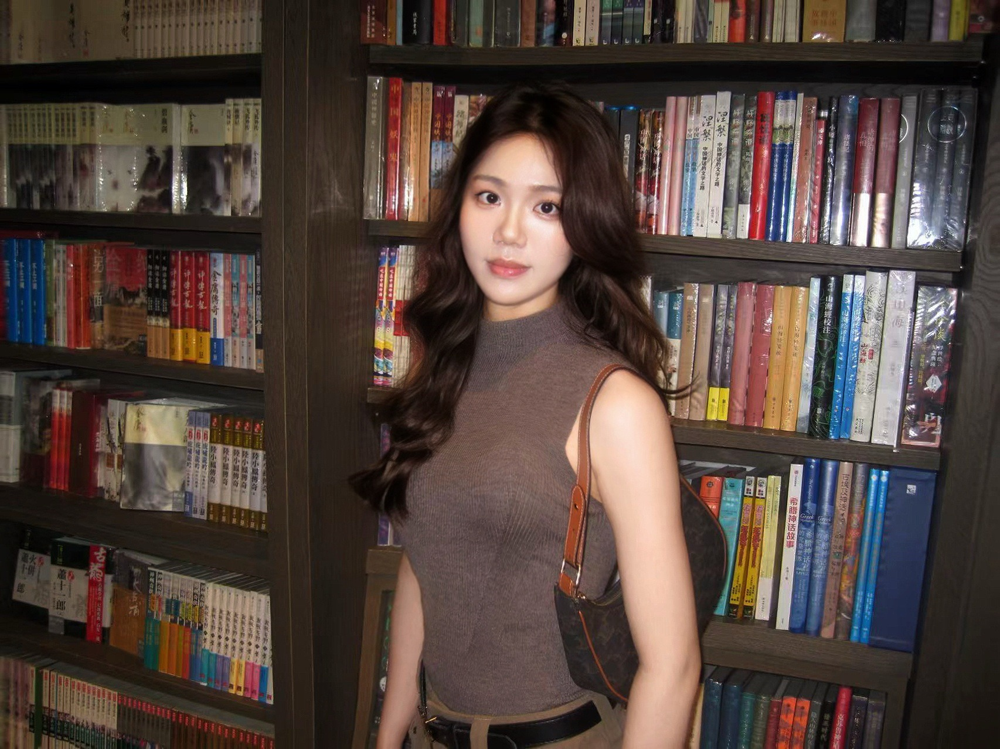

READING / CULTURE / SELF阅读的共鸣，
值得被分享。会被波伏娃的内核晒伤
01值得被分享。会被波伏娃的内核晒伤
14,828单篇阅读662单篇收藏
图文内容 / 个人实作
阅读选题与情绪表达
从波伏娃的阅读片段出发，用标题与图文连接读者的共鸣。
14,828单篇阅读
2,160点赞
662收藏
夏羽珊 / YUSHAN XIA
产品运营背景，具备公众号写作、图文内容、视频制作与直播经历。
用清晰的表达连接用户需求，用数据复盘内容表现。

SELECTED CASES / 01—03
内容表达、直播沟通、产品理解。
每项案例都有我的角色、具体动作和作品证据。
图文内容 / 个人实作
从波伏娃的阅读片段出发，用标题与图文连接读者的共鸣。
直播内容 / 业务实作
以产品理解参与直播主持，保留场观、关注和咨询线索记录。
产品表达 / AI 协同
梳理受众、价值与信息层级，参与产品海报文案与 AI 视觉迭代。
信息提炼 · 文案修订 · 视觉反馈
查看海报与修改过程数据按已提供的记录展示，统计口径与个人贡献见案例详情。
ROLE FIT / EVIDENCE FIRST
切换目标岗位，快速查看对应作品。
ABOUT / MY NEXT CHAPTER
内容要有表达，也要有目标。
先讲清楚，再用数据复盘。
现任金吉列产品运营，连接全国分公司、顾问与合作资源，参与产品内容、直播主持和经营分析。此前在网易实习期间制作过部分视频号内容，并为研究生会公众号撰写推文。
希望在新媒体运营与内容策划岗位，把产品理解、文字表达和数据复盘结合起来。个人阅读图文与出镜作品，是持续积累内容经验的另一条路径。
LET'S TALK / NEXT OPPORTUNITY
求职方向：新媒体运营 / 内容策划 / 直播运营
欢迎围绕项目中的具体问题展开交流。